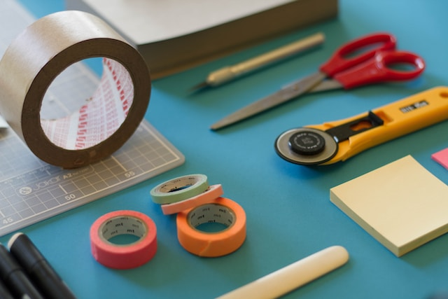
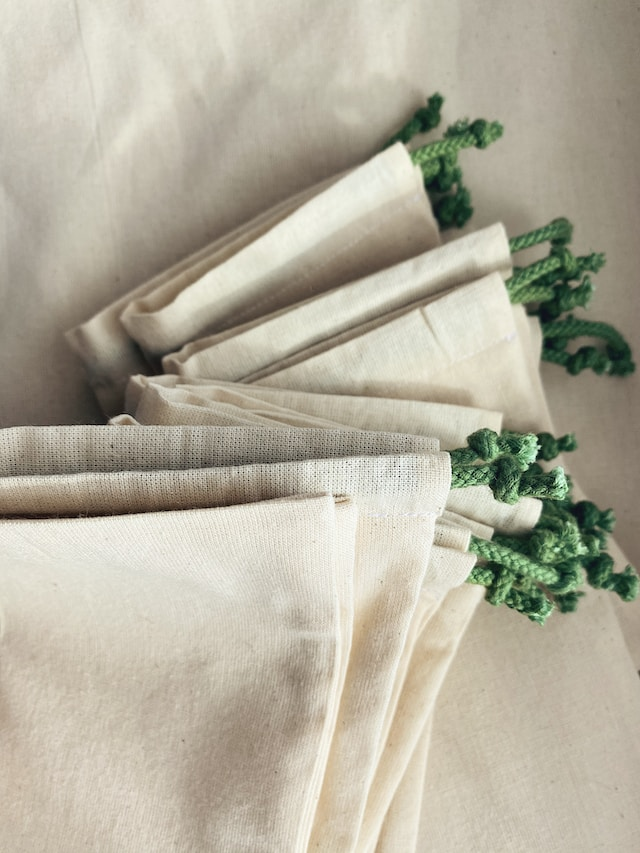

streetwear Designer
"smdrlaywr"
smdrlaywr, the visionary fashion streetwear designer with a unique blend of creativity, urban aesthetics, and cutting-edge style. With an unwavering passion for fashion and a deep understanding of street culture, smdrlaywr has emerged as a trailblazer, redefining the boundaries of streetwear and leaving an indelible mark on the fashion world.
Born and raised in Kigali, smdrlaywr was immersed in the vibrant energy of the city streets from an early age. Inspired by the diverse subcultures, music, and art that surrounded him, they developed a keen eye for innovative design and aninnate ability to capture the essence of urban fashion.
From humble beginnings, smdrlaywr honed his craft through relentless experimentation, merging high-quality materials with edgy and unconventional design elements. The result is a distinct streetwear aesthetic that seamlessly blends comfort, functionality, and style. Each piece of smdrlaywr's collection tells a story, reflecting the attitude and spirit of the modern urban lifestyle. 
What sets smdrlaywr apart is his commitment to pushing boundaries and challenging conventional norms. He fearlessly embrace bold colors, unexpected patterns, and unconventional silhouettes, transforming traditional streetwear into wearable works of art. smdrlaywr's designs effortlessly capture the attention of fashion enthusiasts, influencers, and celebrities alike, further cementing their status as an industry icon.

Beyond his innovative designs, smdrlaywr is also deeply committed to sustainable and ethical practices. They actively seek out eco-friendly materials and production methods, ensuring that their fashion creations contribute positively to both the environment and society. 
In an industry that thrives on constant change, smdrlaywr remains at the forefront, shaping the future of streetwear through his distinct style and unwavering passion. With each collection, he redefine what it means to be a fashion streetwear designer, leaving an indelible mark on the fashion landscape and inspiring a new generation of creatives to carve their own paths.